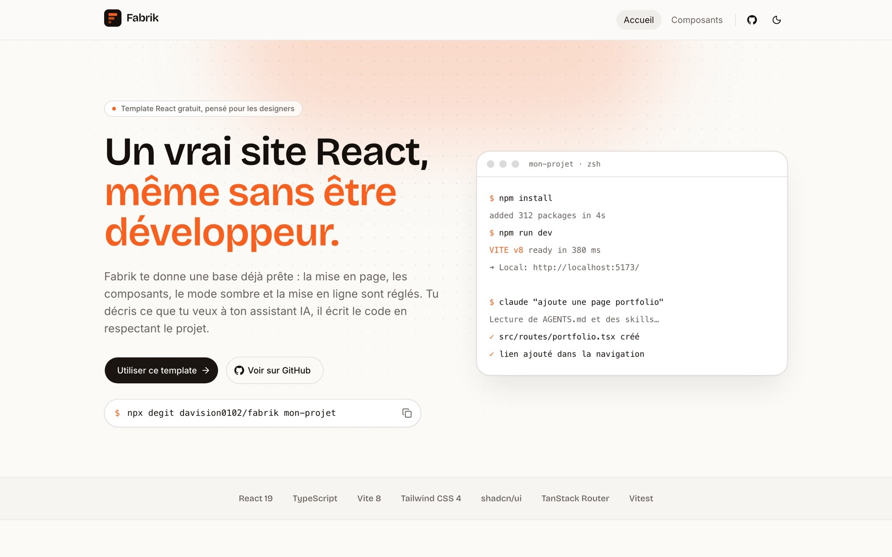
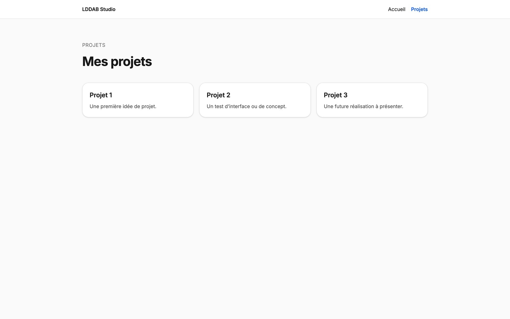

Fabrik : de mon template perso à un outil partagé.
Un template React gratuit pour créer un vrai site, même sans être développeur. Je l'ai d'abord construit pour moi, puis je l'ai repris de fond en comble pour le partager en open source.
- Type
- Projet personnel, open source (licence MIT)
- Date
- Novembre 2026
- Rôle
- Design, code et documentation, avec un assistant IA
- Stack
- React 19, TypeScript, Vite 8, Tailwind CSS 4, shadcn/ui

Le point de départ
Chez BearStudio, on était sans cesse poussés à tester l'IA, à être curieux, à regarder ce qui se faisait ailleurs. C'est là que j'ai commencé, dans mon coin, à construire mon propre template.
Je suis designer, pas développeur, et je voulais une base pour passer de la maquette à un vrai site.
La première version s'appelait LDDAB Studio, dans un dépôt nommé DA-VISION. Une base React prête à l'emploi, que je clonais pour démarrer un site, une app ou un prototype. J'en parle dans mon article UX/UI designer à l'ère des agents IA.
Ce qui n'allait pas
En la reprenant avec un œil neuf, la V1 avait surtout l'air d'un brouillon personnel :
- Une page d'accueil vide de sens : un titre, deux boutons qui ne menaient nulle part et trois cartes génériques.
- Des contenus de remplissage, comme une page « Mes projets » avec Projet 1, 2 et 3, et des textes écrits à la première personne.
- Rien pour guider l'IA : deux dossiers d'instructions qui contenaient chacun une seule phrase.
- Une base fragile : le build plantait à cause d'une option devenue obsolète, la vérification automatique ne vérifiait rien, et il n'y avait aucun test.

Le 13 novembre 2026, j'ai décidé de la reprendre de fond en comble, avec un objectif clair : qu'un autre designer puisse s'en servir sans moi.
Une identité pour un outil partagé
Un outil qu'on partage a besoin d'un nom qui n'est pas le sien. LDDAB Studio est devenu Fabrik, et le dépôt a été renommé en conséquence.
Une identité « atelier », pour évoquer un endroit où l'on fabrique. Le nom et tous les textes sont réunis dans un seul fichier, pour que chacun puisse renommer le projet en deux minutes.

Une vraie page d'accueil
La nouvelle page d'accueil explique en un coup d'œil ce qu'est Fabrik et comment démarrer. On y trouve un vrai titre, un terminal qui montre comment on travaille avec l'IA, la commande d'installation à copier, les outils utilisés, six fonctionnalités, trois étapes pour se lancer et un appel à l'action final.
La page « Mes projets » est devenue une vitrine des composants : boutons, champs, fenêtres et cartes, visibles en clair et en sombre, comme une librairie Figma.

Mobile et mode sombre
Le site s'adapte au mobile, et le mode sombre est arrivé, sans flash au chargement de la page.

Prêt pour l'IA
C'était le plus gros morceau. L'idée : que l'assistant comprenne le projet au lieu de tout casser.
- Un mode d'emploi pour l'assistant : le fichier
AGENTS.md, lu par Claude Code, Codex, Cursor ou Copilot, explique comment le projet est rangé et les règles à suivre. - Onze fiches pas à pas, appelées skills : transformer une maquette Figma en page, faire une passe de finition, ajouter une page, un formulaire ou un test, mettre le site en ligne, changer l'identité. L'assistant choisit tout seul la bonne selon la demande.
- Le serveur MCP de shadcn, pour que l'assistant installe les bons composants.
Tu décris ce que tu veux à ton assistant IA, il écrit le code en respectant le projet.
Pour ceux qui n'ont jamais ouvert un terminal
J'ai écrit le guide que j'aurais aimé avoir au début. Le README accompagne pas à pas, de la création du compte GitHub à la mise en ligne, en une vingtaine de minutes la première fois.
On y trouve des exemples de demandes à faire à l'assistant, une rubrique « Si ça bloque » et un petit lexique : terminal, dépôt, commit, composant, déployer… Les mots qui m'ont fait peur quand j'ai commencé.
Une base solide
Un outil partagé doit être fiable. Le build a été réparé, et des garde-fous préviennent si quelque chose ne va pas dans le code avant la mise en ligne : formatage automatique, tests, vérification à chaque modification, mises à jour des dépendances suivies. La mise en ligne est gratuite, sur GitHub Pages.
- Fichiers touchés
- 57
- Lignes ajoutées
- ~1 450
- Tests (0 avant)
- Au vert
- Build
- < 1 s
Et maintenant
Fabrik est en ligne et open source. Je l'utilise pour mes propres projets, et je continue de l'améliorer. Les retours de designers et de débutants m'intéressent particulièrement.
Voir la démo Le code sur GitHub
Pour l'histoire de départ, celle d'un designer qui découvre le code avec l'IA, lis mon article UX/UI designer à l'ère des agents IA.
Disponible pour un CDI · Île-de-France
Votre prochain Product Designer, c'est peut-être moi.
Je cherche une équipe où concevoir des produits utiles, du terrain jusqu'au code. Parlons-en.